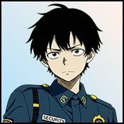

Player wiki noticeThis community-maintained page may contain gameplay, story, and mature-content spoilers.

概览
Marcus Webb 是一个 未来时期警卫 现场 主运输枢纽。他的当前作者内容是共享的一部分 混乱辛迪加 任务序列与 Kitty 和 Zodiac 。此行走覆盖到哪里可以找到他以及如何在不透露其故事结果的情况下到达这次会面。
Marcus是一个 环境 NPC:他的肖像没有普通的Talk,礼物,训练或个人感情路线,共享的相遇会奖励其他参与者,可以提高玩家的Roguestat,他们不会招募他做妓院工人或女佣.
快速状态
| 属性 | 数值 |
|---|---|
| 年龄/时代/调整 | 27 / 未来/中立 |
| 职业 | 运输警卫 |
| 纵向 | 每天早上7时至5时 |
| 个人关系进展 | 无配置 |
| 最喜欢的数据/关系技能 | 无配置 |
| 个人谈话、礼物、H2Hs和日期 | 无配置 |
| 主要共同接触 | 猛击新手之后, 新鲜血上午7时至下午5时 |
| 任务完成奖励 | 轮廓+1,一次,加上Kitty/Zodiac 感情 |
建议走过
- 输入 辛迪加门 输入 未来的总理部门结束 混乱之门 和 守门员.
- 访问 议员 (单位:千美元) 新变量, 大顶 用于 Kitty 的 新鲜肉, 娱乐中心 用于 Chamel 的 让小丑进来,以及 "财富报"的Booth 用于 Zodiac 的 前言会议. Funhouse介绍首先需要"新变数";其他介绍没有爱的前提条件.
- 与 门卫和三个介绍都完成了时返回 "财富报"的Booth (单位:千美元) 收款.
- 访问 合成人再充电站 (单位:千美元) 收取会费 -- -- 律师协会.
- 回归 "财富报"的Booth (单位:千美元) 新鲜血本次通报没有单独的Marcus、Kitty或Zodiac感情门槛。
- 访问 下午7时至5时 (单位:千美元) 猛击新手。完成接见 轮廓+1 曾经
- 后续行动,访问 莫特莱的巢穴 和完成时间 欢迎来到马戏团 如果你还没有。 老板会注意到的 既要欢迎,又要调味
这些是 自动, 一次性场景。访问指定地点时,必须满足先决条件。如果一个不同的符合条件的场景先播放,则在完成后再进行重访。 猫的眼睛,Kitty的单独监视遭遇,并不是Marcus任务的先决条件.
相遇要求
入门访问可以按以下先决条件允许的任何顺序完成,其自动触发器使用列表位置,独立于Marcus的普通肖像.
| 场景 | 地点 | 小时 | 所需完成 |
|---|---|---|---|
| 混乱之门 | 辛迪加门 | 任何时间 | 无额外先决条件 |
| 守门员 | 辛迪加门 | 任何时间 | 混乱之门完成 |
| 新变量 | 议员 | 任何时间 | 无额外先决条件 |
| 新鲜肉 | 大顶 | 任何时间 | 无额外先决条件 |
| 让小丑进来 | 娱乐中心 | 任何时间 | 新变量完成 |
| 前言会议 | "财富报"的Booth | 任何时间 | 无额外先决条件 |
| 收款 | "财富报"的Booth | 任何时间 | 福特洛德会议结束; 新鲜肉完成; 送进小丑完成; 守门员完成 |
| 收取会费 -- -- 律师协会 | 合成人再充电站 | 任何时间 | 收款完成 |
| 新鲜血 | "财富报"的Booth | 任何时间 | 收款 -- -- 已完成 |
| 猛击新手 | 顶级运输Nexus枢纽 | 下午7时至5时 | 新血液完成 |
| 欢迎来到马戏团 | 莫特莱的巢穴 | 任何时间 | 无额外先决条件 |
| 老板会注意到的 | 莫特莱的巢穴 | 任何时间 | 击打Rookie完成;欢迎来到马戏团完成 |
仅 猛击新手 有一个 下午7时至5时 在这些场景中需要时间。其他场景的触发器没有额外的场景时数限制。表格描述了场景要求;前往相关区域的旅行仍然使用游戏的正常位置访问。
Marcus 任务奖励和选择
以下的感情价值是: 基点,在共享关系计算之前。这些场景都没有配置 Marcus - 情感奖励。
新鲜血
完成简报 Zodiac+3和Kitty+3 基情。其选择为 Zodiac:
| 答复 | 额外的Zodiac 基础感情 |
|---|---|
| 信用和盲目? | +1 |
| 如果他拒绝呢? | +2 |
| 一个紧张的新手在新工作。 | +3 |
最好的选择就是做简报 6基 Zodiac 爱和3基 Kitty 爱。所有三个答复都允许进行Marcus;自信的答复不是强制性解锁。
猛击新手
完成交会对接 Kitty+3和Zodiac+3 基情,另设 一次性 Rogue +1。它的结束选择增加了点数。 Kitty:
| 答复 | 额外的Kitty 基础感情 |
|---|---|
| 有效,他没有机会,Zodiac选择了合适的人选 | +2 |
| 那个可怜的家伙不知道他刚报名干什么,是吗? | +1 |
| 如果你需要说服我做点什么,我自愿作为致敬。 | +3 |
最高的选择是相遇 6基 Kitty 爱和3基 Zodiac 爱. 轮廓+1 特派团的征聘措辞涉及共同的故事;没有在玩家拥有的员工名册中添加Marcus。
老板会注意到的
此后续奖项 Motley + 3 基础情感二. 结 论 猛击新手 和 欢迎来到马戏团,然后访问他的巢穴。它不增加Marcus-感情奖励,也不要求Marcus关系阶段。
排程和路线问题排除
Marcus的 每日7时至5时的肖像画 不需要介绍、 爱意或追求的旗帜要求。在新血正常之前见到他。他的空动作菜单也会被期望: 满足他不会解锁个人的谈话动作 。
若为 猛击新手 不触发,请检查您是否已完成 新鲜血 而且你现在 下午7点到5点之间。完成的 Marcus 相遇不会重复。如果缺少新血,请通过 收取会费——酒吧——收取会费——Zodiac/Kitty/Chamel介绍和守门人.
目前没有配置 Marcus 个人H2H,公寓访问,怀孕路线,工人培训,女佣清洁进步,度假,Kupie专辑或圣诞场景他完全走过上面的共享序列
相关页面
Overview
Marcus Webb is a Future-era security officer at the Prime Transportation Hub. His current authored content is part of the shared Chaos Syndicate mission sequence with Kitty and Zodiac. This walkthrough covers where to find him and how to reach that encounter without revealing its story outcome.
Marcus is an ambient NPC: his portrait has no ordinary Talk, gifts, training or personal affection route. The shared encounters reward other participants and can raise the player's Rogue stat. They do not recruit him as a brothel worker or maid.
Quick Stats
| Attribute | Value |
|---|---|
| Age / era / alignment | 27 / Future / Neutral |
| Occupation | Transportation security officer |
| Portrait | Prime Transportation Hub, 7 AM–5 PM every day |
| Personal relationship progression | None configured |
| Favorite stats / relationship skill | None configured |
| Personal Talk, gifts, H2Hs and dates | None configured |
| Main shared encounter | Taming the Rookie, after New Blood, 7 AM–5 PM |
| Mission completion reward | Rogue +1, once, plus Kitty/Zodiac affection |
Recommended Walkthrough
- Enter Syndicate Gates in the Future Prime Sector. Finish The Gates of Chaos and The Gatekeeper.
- Visit The Parlor for The New Variable, The Big Top for Kitty's Fresh Meat, The Funhouse for Chamel's Send in the Clown, and Fortune Teller's Booth for Zodiac's The Foretold Meeting. The Funhouse introduction requires The New Variable first; the other introductions have no affection prerequisite.
- With The Gatekeeper and all three introductions complete, return to Fortune Teller's Booth for Collecting Dues.
- Visit the Synthetic Beings Recharge Station for Collecting Dues - The Bar.
- Return to Fortune Teller's Booth for New Blood. This briefing has no separate Marcus, Kitty or Zodiac affection threshold.
- Visit Prime Transportation Hub, 7 AM–5 PM for Taming the Rookie. Complete the encounter to receive Rogue +1 once.
- For the follow-up, visit Motley's Lair and complete Welcome to the Circus if you have not already. The Boss Takes Notice requires both that welcome and Taming the Rookie.
These are automatic, once-only scenes. Visit the specified location with the prerequisites satisfied. If a different eligible scene plays first, revisit after finishing it. Cat's Eyes, Kitty's separate surveillance encounter, is not a prerequisite for Marcus's mission.
Encounter Requirements
The introductory visits can be completed in any order allowed by the prerequisites below. Their automatic triggers use the listed locations, independently of Marcus's regular portrait.
| Scene | Location | Hours | Required completion |
|---|---|---|---|
| The Gates of Chaos | Syndicate Gates | Any hour | No additional prerequisite |
| The Gatekeeper | Syndicate Gates | Any hour | The Gates of Chaos completed |
| The New Variable | The Parlor | Any hour | No additional prerequisite |
| Fresh Meat | The Big Top | Any hour | No additional prerequisite |
| Send in the Clown | The Funhouse | Any hour | The New Variable completed |
| The Foretold Meeting | Fortune Teller's Booth | Any hour | No additional prerequisite |
| Collecting Dues | Fortune Teller's Booth | Any hour | The Foretold Meeting completed; Fresh Meat completed; Send in the Clown completed; The Gatekeeper completed |
| Collecting Dues - The Bar | Synthetic Beings Recharge Station | Any hour | Collecting Dues completed |
| New Blood | Fortune Teller's Booth | Any hour | Collecting Dues - The Bar completed |
| Taming the Rookie | Prime Transportation Nexus Hub | 7 AM–5 PM | New Blood completed |
| Welcome to the Circus | Motley's Lair | Any hour | No additional prerequisite |
| The Boss Takes Notice | Motley's Lair | Any hour | Taming the Rookie completed; Welcome to the Circus completed |
Only Taming the Rookie has a 7 AM–5 PM time requirement among these scenes. The others have no additional scene-hour restriction in their triggers. The table describes scene requirements; travel to the relevant area still uses the game's normal location access.
Marcus Mission Rewards and Choices
The following affection values are base points, before the shared relationship calculation. None of these scenes has a configured Marcus-affection reward.
New Blood
Completing the briefing gives Zodiac +3 and Kitty +3 base affection. Its choice adds points to Zodiac:
| Reply | Additional Zodiac base affection |
|---|---|
| Credits and a blind eye? Standard corruption package? | +1 |
| What if he says no? Do we have leverage? | +2 |
| A nervous rookie at a new job. He'll fold if we push right. | +3 |
The highest choice makes the briefing 6 base Zodiac affection and 3 base Kitty affection. All three replies allow the Marcus encounter to proceed; the confident response is not a mandatory unlock.
Taming the Rookie
Completing the encounter gives Kitty +3 and Zodiac +3 base affection, and a separate one-time Rogue +1. Its closing choice adds points to Kitty:
| Reply | Additional Kitty base affection |
|---|---|
| Effective. He didn't stand a chance. Zodiac picked the right person for this. | +2 |
| That poor guy has no idea what he just signed up for, does he? | +1 |
| If you ever need to persuade me to do something, I volunteer as tribute. | +3 |
The highest choice makes the encounter 6 base Kitty affection and 3 base Zodiac affection. Rogue +1 is awarded for completion, regardless of this choice, and cannot be farmed by returning to Marcus. The mission's recruitment wording concerns the shared story; it does not add Marcus to a player-owned staff roster.
The Boss Takes Notice
This follow-up awards Motley +3 base affection. Complete Taming the Rookie and Welcome to the Circus, then visit his lair. It adds no Marcus-affection reward and requires no Marcus relationship stage.
Schedule and Route Troubleshooting
Marcus's 7 AM–5 PM daily portrait has no introduction, affection or quest flag requirement. Seeing him before New Blood is normal. His empty action menu is also expected: meeting him does not unlock a personal Talk action.
If Taming the Rookie does not trigger, check that you finished New Blood and that you are at Prime Transportation Hub between 7 AM and 5 PM. A completed Marcus encounter does not repeat. If New Blood is missing, work backward through Collecting Dues - The Bar → Collecting Dues → Zodiac/Kitty/Chamel introductions and The Gatekeeper.
There is currently no configured Marcus personal H2H, apartment visit, pregnancy route, worker training, maid cleaning progression, resort vacation, Kupie album or Christmas scene. His complete walkthrough is the shared sequence above.
Related Pages
Text adapted from the community-maintained Chronoromancer Wiki under CC BY-SA 4.0.